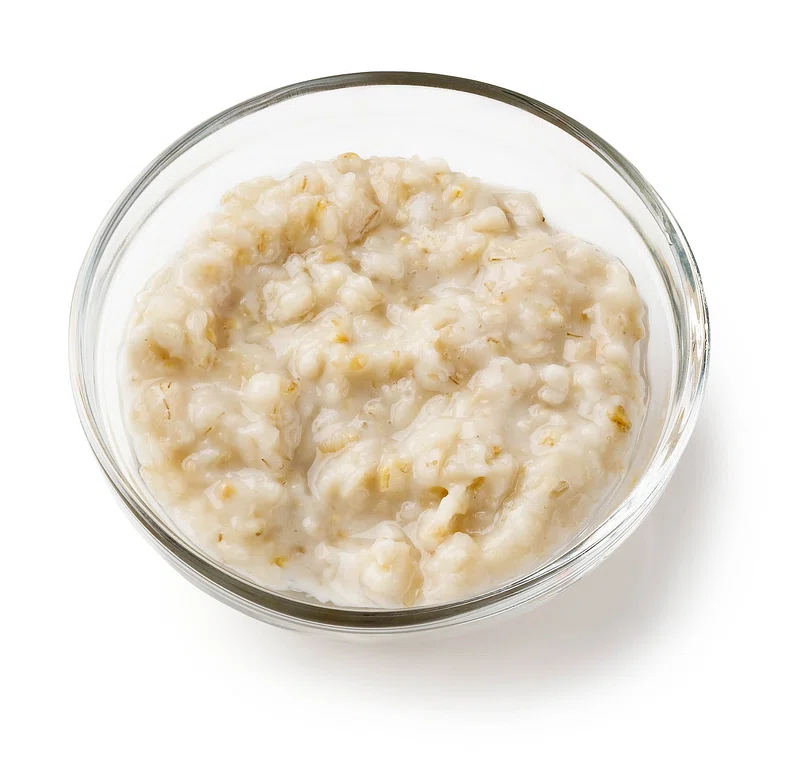

Oats are a highly nutritious, gluten-free whole grain packed with fiber (especially beta-glucan), protein, and antioxidants, beneficial for heart health, gut health, and weight loss. The healthiest types are steel-cut or rolled oats, which can be enjoyed as savory porridge (upma), creamy oatmeal, or overnight oats.
In these recipe, we bring a new and easy oats recipe which you can make with just 3 ingredients